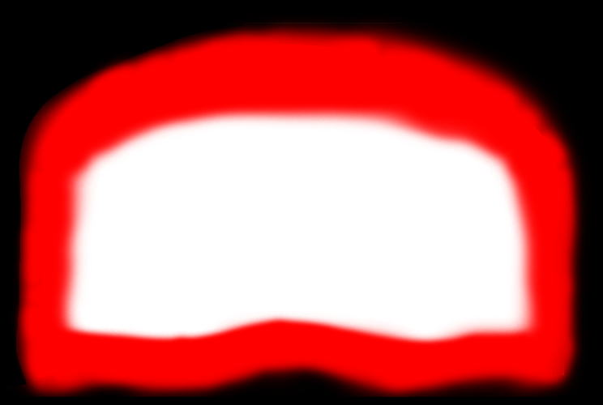

請滑動書本


Website dedicated to sharing resources


人死後皆會變成鬼，生活在冥間或曰地獄。 民間對鬼沒有特定看法，一般人相信，「鬼」以一種電波（念力）形態存在。 而人的腦亦選擇性地接收不同的電波（念力），所以有些人特別容易看到鬼，有些卻不容易。這亦與為何含恨或含冤而死的人（鬼）會經常出現相呼應。

傳說中形如死人而能夠活動的怪物。源自盛行於非洲貝南、多哥，及北美洲海地的巫毒教信仰，通過祭祀下毒將屍體復活，以便驅使從事勞役活動；在現代的許多游戲和文藝作品中也時有出現。喪屍如同吸血鬼，常歸類於不死生物。也有將已死去的怪物歸類於殭屍，肉體還活著卻已失去理智的怪物歸類於喪屍的說法。

經常是死的象徵，常被化身為死神或鬼的形像，也被當作材料，製成骨器。骨頭常是堅硬的象徵，也是人有氣節的具體擬物化即「骨氣」，尤其是成年人的骨頭極為堅固，因為經傳統土葬，可以近乎永久地保存。 在某些傳說之中，死神通過強制手段收集受害者的靈魂，導致受害者的死亡，稱之為收割者。